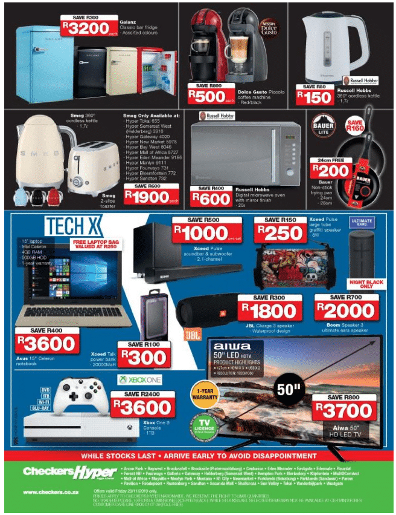

CHECKERS SUPER MARKET
Better and better; this is what we strive for on behalf of the millions of customers who’ve made Checkers a household name since 1956. But what does it really mean to be “better and better”? Well, our track record for pushing boundaries can be traced back to the opening of our maiden store in Mayfair, Johannesburg. As it turned out, that first, humble 38 square metre outlet would become the incubator for many groundbreaking ideas for the then fledgling supermarket. Today, backed by the biggest food retail group in Africa, we’re able to tap into a wealth of resources that further fuel our innovative spirit and drive to be better and better. The Shoprite Checkers family’s collective mission is to bring products and services to market that delight in both quality and price, and we’re able to do that thanks to a shared commitment to our customers. Here’s a brief look at our journey to becoming SA’s most loved retailer: 1956 Our first store opens in Mayfair, Johannesburg. 1950s Checkers counters retail price wars with its affordable House Brands. 1960s We grow from three stores to a chain of 85 stores nationally. 1968 The first ever locally manufactured trolleys are delivered to Checkers stores. 1960’s We become the first retail chain store to use high-density polyethylene bags. 1982 Checkers pioneers the trolley lock system which saves millions in theft. 1984 Spearheaded a from-home shopping scheme via the South African Post Office. 1985 We introduce the first card payment system in partnership with Barclays Bank. 1985 Launches the first grocery delivery system the country has ever seen. 1986 Introduction of an early version of product price scanning in stores. 1990 We launch the biggest customer engagement drive by a national retailer. 1991 Checkers joins the biggest food retail group on the continent. Better and better every time Our efforts in developing products, services and experiences that people love have made the Checkers brand relevant after almost a century of serving the Southern African market. From our much loved steakhouse classics, to our ever-expanding cellar of local and international wines, to our extensive range of award-winning cheeses: we’re proud to be the supermarket of choice for shoppers who enjoy the finer things. But it doesn’t stop there; we make sure every shopper enjoys value for their money by keeping the prices of basic commodities low. In fact, we’ve consistently gone beyond the retail status quo when our customers needed us. When bread prices spiralled out of control in 1990, for example, we immediately stepped in and subsidised the sale of every loaf of bread at our stores. Millions of South Africans also enjoy more value for their rand with campaigns like “Trolley for trolley, you won’t pay more at Checkers” and others that routinely slash basic commodity prices for lower income shoppers. These and countless initiatives over the years have earned the Checkers brand a reputation for trust, quality and reliability in times of uncertainty. Our promise to you We’re always learning how to be a better retailer for you. When Checkers founder, Norman Hertz Herber, cut the ribbon on our first store in Mayfair, it was the culmination of years of learning from what leading retailers all over the world were doing at the time. He also knew the Mayfair store was to be the start of a long road ahead that would see the Checkers brand continually push beyond possible. We think Norman’s set the bar sufficiently high, and it is in that spirit that we continue the tradition of innovation, customer excellence and products and services that delight. And for us, that’s what it means to be better and better.
WHERE WILL YOU FIND IT
You will find the checkers at right next to the romans pizza.
STORE HOURS
MONDAY: 8:00 AM - 10:00 PM
TUESDAY: 8:00 AM - 10:00 PM
WEDNESDAY: 8:00 AM - 8:00 PM
THURSDAY: 8:00 AM - 8:00 PM
FRIDAY: 8:00 AM - 10:00 PM
SATURDAY: 8:00 AM - 10:00 PM
SUNDAY: 7:00 AM - 00:00 PM
SPECIALS 